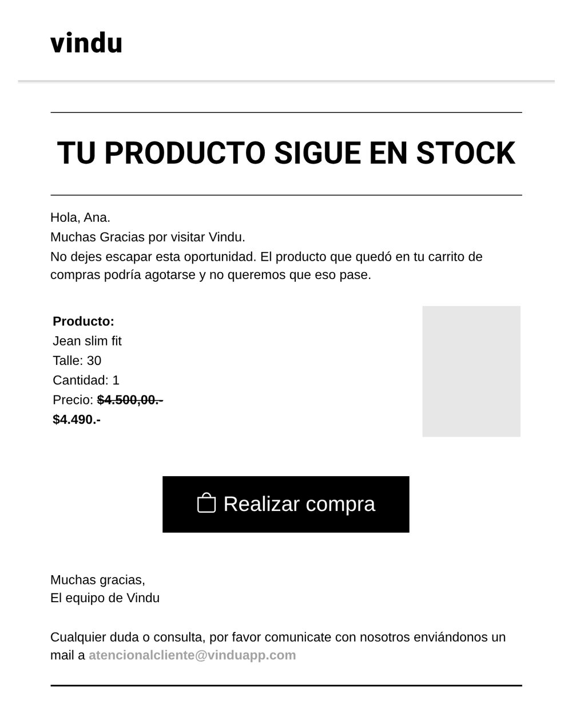
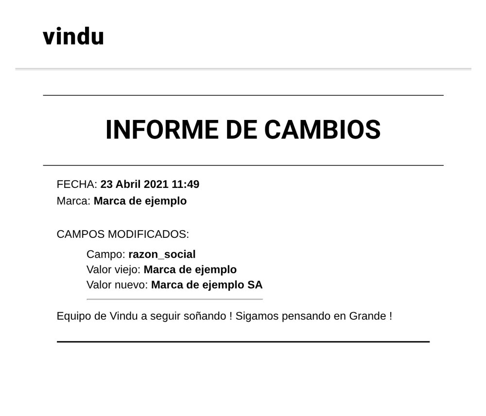

Proyectos›Vindu2019 – 2021
Vindu era una plataforma de moda que conectaba marcas con compradores: las marcas cargaban productos y stock desde un dashboard y los vendían en la app. Trabajé como desarrollador freelance, por horas, con el responsable de producto y un desarrollador senior que revisaba mi código antes de cada despliegue.
- RolDesarrollador web freelance, remoto
- StackPython, Django, Django REST Framework, JavaScript, HTML/CSS, WordPress
- EquipoTrello, Bitbucket, code review y entornos de desarrollo y producción separados
# API de stock para las marcas (Django REST Framework)
GET stock por producto, talle y color
UPDATE stock de un producto
# acceso restringido a usuarios de marca + documentación
# Procesos programados en Python
recordatorio de carritos abandonados
aviso de producto por agotarse
carga de productos desde CSV y XMLQué hice
- Desarrollé una API REST con Django REST Framework para que las marcas sincronizaran su stock por producto, talle y color, con permisos por usuario de marca y documentación.
- Automaticé procesos con scripts programados: recordatorio por mail de carritos abandonados, aviso de producto por agotarse y carga de productos desde CSV y XML.
- Implementé la generación de etiquetas de envío de los pedidos y el aviso por mail cuando una marca cambiaba sus datos.
- Hice la web institucional en WordPress (con reCAPTCHA v3), las landings de marcas y de usuarios, y el restyling del dashboard de marcas y de los mails.
- Colaboré en las integraciones con Tiendanube, Instagram y Mercado Pago.
Mails que diseñé


Renderizados desde el HTML original de las pruebas. El logo y la foto del producto ya no están online, y los nombres son datos de ejemplo.
Cómo trabajábamos
- Cada tarea era una tarjeta de Trello; yo subía los cambios al repositorio y el desarrollador senior los revisaba y desplegaba.
- Probábamos en un sitio de desarrollo antes de pasar a producción, y el responsable de producto validaba cada entrega.
- El código es privado de la empresa, por eso este caso no tiene repositorio.